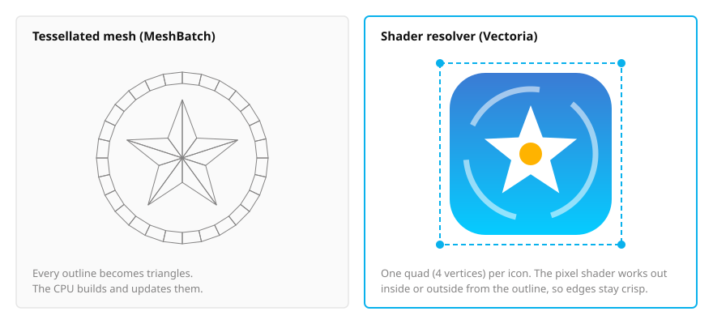
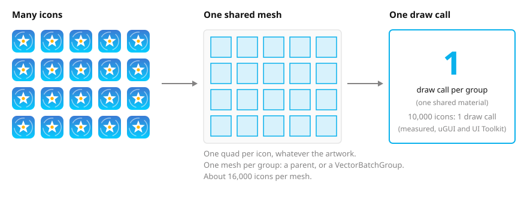
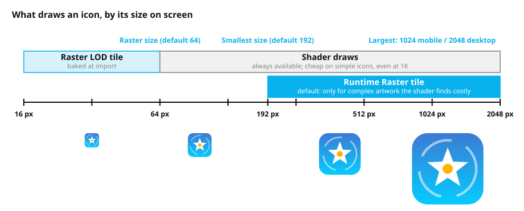

How Drawing Is Optimized
Why Vectoria stays fast with hundreds of icons, and when a bitmap is cheaper.
Vector art is expensive if it is turned into triangles for every icon, every frame. Vectoria avoids that in three steps: the shader draws the outlines directly, many icons share one draw call, and artwork that is costly or small can be drawn from a bitmap tile instead.
The shader draws the outlines
With the Shader resolver nothing is tessellated. Each icon is one quad of four vertices. For every pixel the fragment shader walks the artwork's outline segments and works out the distance to the edge and whether the pixel is inside. Edges stay crisp at any size, and animating an icon only sends a few numbers to the GPU.

One draw call for many icons
All shader icons with the same parent share one mesh and one draw call, whatever their artwork. Ten different .vpaint files in one grid are still one call. One mesh holds about 16,000 icons.

Flat areas skip the shader
When an artwork has a large solid area, that area is drawn as a plain coloured quad with no data fetches, and the shader only runs on the band around the outline. Artwork that is mostly one flat colour is not baked into a tile either, because there is nothing left to save.
When a bitmap is cheaper
The shader cost grows with the number of pixels an icon covers and with how many outline segments and gradients it has. Two features trade a little memory for a bitmap tile that costs one texture read per pixel:

| Raster LOD | Runtime Raster | |
|---|---|---|
| For | Small icons | Large, complex artwork |
| Baked | At import, stored in the .vpaint asset | At runtime, on the GPU, when the icon first needs it |
| Sizes | At or below the Raster size (default 64 px) | From 192 px up to 1024 px (mobile) or 2048 px (desktop) |
| Which artwork | Every UI Vectoria artboard of a file with Raster LOD on | Chosen by shader work (Complex Image Only), or all (Always Enabled) |
| Ready | On the first frame, no GPU bake | A frame or two after the icon appears |
| Setting | Raster size in Settings or the importer | Bake at runtime in Settings, Complex Image Only by default |
Both draw from the same shared texture atlas, so tile icons batch into one draw call like the shader icons do.
Where to go next
- Raster LOD: small tiles baked at import
- Runtime Raster: large artwork baked when it is worth it
- Choosing a resolver: Shader, MeshBatch and Painter2D compared